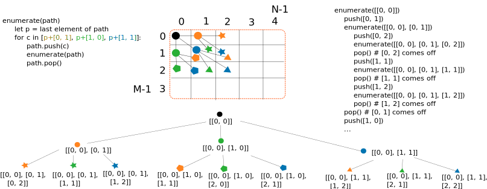
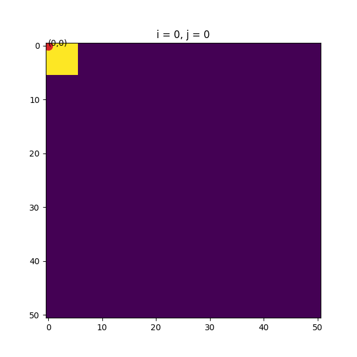

Assignment 3: Audio Alignment with Dynamic Time Warping (45 Points)
Chris Tralie
Due Monday 3/22/2021
- Overview/Logistics
- Background: Dynamic Time Warping
- Programming Task 1: Drawing All Possible Warping Paths (10 Points)
- Programming Task 2: Dynamic Time Warping (15 Points)
- Programming Task 3: FastDTW (20 Points Total)
Overview / Logistics
The purpose of this assignment is to give you practice implementing dynamic programming techniques in python in the service of a cool application: alignment/synchronization of audio.
Click here to download the starter code for this assignment. You will be editing dtw.py
To handle audio, you will need to setup a library called librosa. To install this, either go to your anaconda prompt and type
or go into the interactive console in spyder and type
If this worked properly, when you run the following code:
You should see this image
Learning Objectives
- Implement an exact and an approximate version of the same algorithm.
- Implement a dynamic programming algorithm with backtracing to extract an optimal solution.
- Use recursion to enumerate paths on a branching structure.
- Use recursion to implement a multiresolution algorithm.
- Use sparse matrices to implement memory efficient 2D arrays, leading to a linear memory algorithm
What To Submit
Please submit your file dtw.py to canvas. Please also submit answers to the following questions on Canvas
- The name of your buddy, if you chose to work with one.
- Approximately how many hours it took you to finish this assignment (I will not judge you for this at all...I am simply using it to gauge if the assignments are too easy or hard)
- Any suggestions if I run this assignment again?
- Any other concerns that you have. For instance, if you have a bug that you were unable to solve but you made progress, write that here. The more you articulate the problem the more partial credit you will receive (fine to leave this blank)
Background: Dynamic Time Warping
The problem we're going to address in this assignment is one of spatial time series alignment. Let's start with an an example to motivate this. Suppose I'm running a 30 meter race against Usain Bolt. I'm definitely going to lose by a lot! But maybe later it would be interesting to line up our videos to show us side by side at different places on the track to compare our form at those locations. Which frames of the videos should we show side by side to best line us up on the track? Let's look at the frames we captured below. We'll line up the frames next to 2D coordinates for our positions over time, which we can think of as a "2D spatial time series," or the positions of the frames that were captured over time. The orange path shows my trajectory, and the blue path shows Usain Bolt's trajectory. (NOTE: This is not at all realistic, but just as an example for the sake of argument. For an actual analysis of Usain Bolt's record setting 100m race, refer to a lab I made for math 111)
As you can see, it takes me three video frames frames (indices 0-2) to run nearly as far as Usain Bolt ran in the interval between his first two frames (indices 0-1), even as Usain Bolt veers slightly out of his lane and runs along a diagonal. Then, Usain Bolt looks back and realizes he can win without even trying, so he slows down and doesn't move as far between his last two frames as he runs straight to the end. Meanwhile, I also slow down after frame two from pure exhaustion and move a bit slower. Eventually, we both make it to the end.
Warping Paths
To figure out how to line up the frames, we define something called a warping path. A warping path is a sequence of pairs of indices between the two time series, where each pair indicates two points that should be aligned between the time series. A warping path satisfies the following rules for a time series of length M aligned to a time series of length N:
-
The first frames are aligned; that is,
[0, 0]is in the warping path. Likewise, the last frames are aligned; that is,[M-1, N-1]is in the warping path. These are known as the boundary conditions. -
We can only stay in place or move forward along each time series from one pair to the next in the warping path; we never move backwards. This is known as the monotonicity condition. Furthermore, we can move at most one step in each time series from one pair to the next, but at least one time series has to move. This is known as the continuity condition Taken together, these two conditions mean that for a pair
[i, j], the next pair can be one of the three options:-
[i+1, j]: The first time series moves forward one step, while the second one stays still. -
[i, j+1]: The second time series moves forward one step, while the first one stays still. -
[i+1, j+1]: Both time series move forward by one step.
-
To figure out which warping path best aligns the time series, we'll define a score associated to each path, which is the sum of the lengths of straight line segments between each pair of aligned points. For example, letting Usain's time series be the first time series and mine be the second one, we could consider the following warping path
[[0, 0], [1, 0], [2, 0], [3, 0], [3, 1], [3, 2], [3, 3], [3, 4]]
We then compute and sum up all of the distances between corresponding pairs. For instance, for [2, 0], the distance between point 2 on Usain's path and point 0 on my path is 25.3. The total cost in this example is approximately 130, but we can definitely do better. For instance, consider the following warping path
[[0, 0], [1, 1], [1, 2], [2, 3], [3, 4]]
This starts and ends at the same place, but it takes different steps in between that lead to fewer and shorter segments. The overall cost is around 27, which is much lower than our original try! But is this the best we can do? The animation below shows all possible warping paths and their associated costs:
In fact, we see that the following warping path is the best over all possible warping paths in this example that achieves a lower cost of 19.8
[[0, 0], [0, 1], [1, 2], [2, 3], [3, 4]]
This intuitively captures the notion that Usain Bolt went the same distance as my first 3 frames over only his first 2 frames, and then we did about the same thing for the rest of it.
Counting Warping Paths with Delannoy Numbers
Now that we have a way to quantify what a good correspondence is between time series via warping paths and their costs, we need to devise an algorithm to compute them efficiently. A brute force algorithm would check every single warping path and return the one with the lowest cost. To see how efficient this is, we need to know how many warping paths to check. In fact, there's a known sequence of numbers, the Delannoy numbers, that count the number of possible warping paths based on the size of two time series (this also happens to be the number of possible edit sequences in the edit distance). In particular, given a time series of length M and a time series of length N, the Delannoy number D(M, N) is defined with the following recurrence relation:
\[ D(M, N) = \left \{ \begin{array}{cc} 1 & M = 1, N = 1 \\ D(M, N-1) + D(M-1, N) + D(M-1, N-1) & \text{otherwise} \end{array} \right \} \]
The base case is (M = 1 or N = 1) is aligning a time series with a single point to another time series, and the only way to do this is by matching that point to every point in the time series, so there is only one possible warping path. The rest of the recurrence comes from the boundary and monotonicity conditions of warping paths. To compute the number of paths, it's possible to simply translate the recurrence over to recursive calls
But we know that there's a more efficient way to evaluate recurrence relations such as these by using memoization, where we fill in an entire dynamic programming table as follows
Below is an example of some of these numbers
| N = 1 | N = 2 | N = 3 | N = 4 | N = 5 | N = 6 | N = 7 | N = 8 | |
| M = 1 | 1 | 1 | 1 | 1 | 1 | 1 | 1 | 1 |
| M = 2 | 1 | 3 | 5 | 7 | 9 | 11 | 13 | 15 |
| M = 3 | 1 | 5 | 13 | 25 | 41 | 61 | 85 | 113 |
| M = 4 | 1 | 7 | 25 | 63 | 129 | 231 | 377 | 575 |
| M = 5 | 1 | 9 | 41 | 129 | 321 | 681 | 1289 | 2241 |
| M = 6 | 1 | 11 | 61 | 231 | 681 | 1683 | 3653 | 7183 |
| M = 7 | 1 | 13 | 85 | 377 | 1289 | 3653 | 8989 | 19825 |
| M = 8 | 1 | 15 | 113 | 575 | 2241 | 7183 | 19825 | 48639 |
The bolded numbers, in which N = M, are referred to as central Delannoy numbers, and we can study them to see how the warping paths scale in one parameter. As shown in this paper, the central Delannoy numbers D(N, N) are
\[ O \left( \frac{ (3 + 2 \sqrt{2})^{N}}{\sqrt{N}} \right) \]
which is not quite exponential due to the square root of N in the denominator, but the scaling is still terrible for all practical purposes. So checking all possible warping paths is a dead end idea for an efficient algorithm.
Dynamic Programming Solution
To solve this efficiently, we're going to follow a dynamic programming strategy extremely similar to the one we used to solve string edit distance. This means that we have to break down our problem into smaller problems and combine their solutions incrementally to build up to the full problem. Let's say we have a time series X with M that we want to align to a time series Y with N samples, and that we're able to compute the distance between a point xi in X and a point yj in Y as di, j. Furthermore, let the optimal cost to align the first i samples of X to the first j samples of Y be expressed as S[i, j]; that is S[i, j] holds the sum of the distances of all segments in an optimal warping path from [0, 0] to [i, j]. Then, we can make the dynamic programming observation:
\[ S[i, j] = \min \left\{ \begin{array}{c} S[i-1, j] \\ S[i, j-1] \\ S[i-1, j-1] \end{array} \right\} + d_{i, j} \]
In other words, take the min of the upper, left, and upper left neighbhors in S, then add the distance from Xi to Yj. This happens because we know that all possible warping paths from 0 to i in X and from 0 to j in Y must end by matching i to j (the boundary condition), so we pay a cost of di, j for that pair. Furthermore, by the monotonicity and continuity conditions, we know the pair before [i, j] has to have moved by either 1 or 0 along both indices, so we consider the optimal costs of all three possible sub-alignments that could have happened directly before aligning the last pair [i, j].
All that remains is the base case / stopping condition. We know by the first boundary condition that x0 needs to match to y0, so
\[ S[0, 0] = d_{0, 0} \]
To fill in the rest of the table, we can simply loop along row by row and fill in each element in the row one at at time, looking back at [i-1, j], [i, j-1] and [i-1, j-1], just as we did for the edit distance dynamic programming solution.
In addition to filling in the dynamic programming table S, we can store another 2D array choices which stores which direction out of [i-1, j], [i, j-1] and [i-1, j-1] led to the optimal cost at each step, and we can then backtrace from the bottom right of the table to the upper left.
Audio Alignment
So far, we've described dynamic time warping (DTW) as a procedure for aligning spatial time series in 2D. However, it was originally conceived as a means to align audio (Sakoe and Chiba, 1970, Sakoe and Chiba, 1978). Surprisingly, there is a way to think of audio as a spatial trajectory in high dimensions. The idea is to summarize little chunks of audio using different statistics, and each statistic ends up being a dimension. As a simple example in 2D, one could consider loudness as a dimension along the x-axis and pitch as another dimension along the y-axis. As the music evolves, the loudness and pitch will change, and the music will trace out a curve.
For a more involved example with other audio statistics, click here to view an interactive animation I made, which I call "Loop Ditty." You won't have to worry about how this actually works in this assignment; the spatial trajectory corresponding to audio will be generated for you, and you will be able to align audio of similar things being played at different rates using general purpose dynamic time warping code you develop.
Programming Task 1: Drawing All Possible Warping Paths (10 Points)
Even though there is a huge number of warping paths as the size of the inputs scale, it is still interesting to examine what all possible warping paths look like for smaller enough M and N. Your task in this section will be to plot all possible warping paths for a particular M and N using recursion. For example, here's where M = 4, N = 4
And here's an example of M = 3, N = 5
Fill in the method plot_all_warppaths to do this. The code already has the stopping condition built in for when a path reaches [M-1, N-1], and it will save a plot to your computer as an image for every complete path it finds.
All paths start off with [0, 0]. You should use recursive calls to branch off and consider the possible continuous steps [+0, +1], [+1, +0], [+1, +1] to the next pair in the warping path. You may want to refer to the recursive backtracing code for edit distance, which used a stack to help branch off for a bunch of paths. The code here isn't exactly the same, but using push and pop to push on the next element before a recursive call and to pop it off before the next recursive call is the way to go. Note that you can use a python list as a stack; the push method is append for a list, but pop is still pop.
The image below shows some pseudocode and a picture depicting how the recursion branches out and grows different paths. Here enumerate is short for plot_all_warppaths. The overlapping subproblems are quite visible even after only two branches, which is part of what motivates a dynamic programming solution.

NOTE: You may get the paths in a different order from the animation above, but as long as they are all unique and you have a number of paths equal to the respective Delannoy number, you're good to go. You should also check several examples beyond the ones I've shown above and verify that you get the right number of paths.
Programming Task 2: Dynamic Time Warping (15 Points)
Now you are ready to implement dynamic time warping. You will start by implementing the dynamic time warping algorithm described in the background to compute an optimal warping path between a sequence of points X and a sequence of points Y. Fill in the method dtw to accomplish this. Once this is finished, you can test out the Usain Bolt example from above:
If this works, you should get the optimal solution
[[0, 0], [0, 1], [1, 2], [2, 3], [3, 4]]
Here are some implementation details to help you. If X has M points and Y has N points, then you should fill in an M x N dynamic programming table called S, which is a 2D array that has been initialized for you in the code. As you're filling in S, you can use the provided method dist_euclidean to compute the distance between a point in X and a point in Y. In particular, the line
will compute the distance between the ith point in X and the jth point in Y. Before you go any further, you should check to make sure the lower right element of your S array is 19.8 in the Usain Bolt example.
Once you feel you have the table right, you should add code to remember the optimal choices you made so you can trace back to extract the optimal warping path. For the purposes of this assignment, it's fine to break ties arbitrarily if there happen to be multiple warping paths that achieve the optimal cost. So your solution should be similar to how the iterative backtracing was done in edit distance, using a while loop. When you are finished, You should return the warping path expressed as a list. Be sure to return a path that starts at [0, 0] and ends at [M-1, N-1], not the other way around. As in the edit distance example, you may find that the reverse method of python lists comes in handy.
Below is a slightly more intricate example that you can test before moving onto audio. It matches two sets of point samples on Figure 8 curves in 2D which go at different rates around the Figure 8:
If this works properly, you should get a result like the following, where you see the points are well-matched even though the two Figure 8s have been warped in time:
But we can go beyond these synthetic examples in 2D and test on some real audio, which we detail below:
Audio Example: The Gettysburg Address
Consider the following two audio clips of people reading the beginning of the Gettysburg address
and
If we line them up, they are completely out of sync
But we can align them by using DTW. First, we turn them into a spatial trajectory using the provided method get_mfcc_mod, and then we can pass them on just like any other sets of points on a path:
This takes about 8 seconds on my computer and comes up with the following output (one in each ear):
If instead we flip the two audio clips, we get the following result
This takes about 8 seconds on my computer and comes up with the following output:
NOTE: Some students have reported that the .wav files the above code saves do not play under Windows. You can instead run the above code from within a Jupyter notebook and then type
And that should pop up with an audio widget that you can play. Be sure you've opened jupyter in the directory where your code is.
Alternatively, Windows users can download VLC Media Player
Programming Task 3: FastDTW (20 Points Total)
Overview
If X has M points and Y has N points, the above algorithm takes \[ O(MN) \] space and time. As far as the time complexity goes, this is certainly much better than a brute force check through all \[ O \left( \frac{ (3 + 2 \sqrt{2})^{N}}{\sqrt{N}} \right) \] paths, but this still does not scale very well. Let's say we want to align two performances of Vivaldi's Spring, each of which is about 220 seconds long. The audio below puts one of these pieces in one ear and the other piece in the other ear, and, as you can hear, they are quite out of sync:
If it took 8 seconds to align two clips which were 20 seconds long, then it will take
\[ 8*(220/20)^2 = 968 \]seconds to align (~16 minutes), which is much longer than the length of each individual clip. And it only gets worse from there. If we have two audio clips which are 1000 seconds (about 17 minutes), they will take nearly 6 hours to align at this rate.
Aside from the time, the O(MN) memory also starts to become prohibitive as we scale up. For 17 minutes of of audio using the parameters above and 4-byte floating point numbers, the dynamic programming table alone takes up nearly 7GB.
Clearly, we need a better solution to be practical for longer audio clips. For this, we turn to an O(M+N) algorithm in both time and space that has been dubbed "FastDTW." This algorithm is an approximation algorithm, which means it is not guaranteed to give the optimal warping path, but in practice, it still gives good results. It was first described in a 2004 paper by Stan Salvador and Philip Chan, and it was also described in the context of music in a 2006 paper by Müller, Mattes, and Kurth. This is an instance of what's known as a multiresolution algorithm. What we do is solve a coarser version of the problem and then use that solution to constrain our search for finer problems, eventually solving the one at the finest scale that we want.
The example below shows the S matrix and the constrained warping paths at different levels on the Gettysburg address example. In this example, M = 863, N = 603. In FastDTW, we keep halving the number of points in X and Y 5 times until we get down to a problem of size M = 26, N = 18. At this point, we perform full on DTW on this small problem, which is very fast, to extract a coarse warping path. We then use the coarse path to help us solve the problem at a scale of M = 53, N=37, searching only through warping paths which fall within a particular radius of the coarse path. We then use the warping path we find at this scale to constrain the warping path at the next larger scale M = 107, N=75 in a similar way, and we keep doing this until we get up to the original scale. The images below depict this. As you can see, we're able to ignore tons of cells once we get to the finer scales, because the boxes we put around the constraint warping path are so small compared to the size of the dynamic programming matrix
Once you finish the fastdtw method, the code to run this is as follows
This takes about 5 seconds on my computer and comes up with the following output:
In this case, the output is exactly the same as with the regular quadratic algorithm, though this is not guaranteed.
Below we describe the recursive algorithm in more detail.
Recursive Algorithm Specification
Given a time series X with M points, a time series Y with N points, and a whole number radius, we refer to the time series at level L as XL and YL, which have a size of
\[ M_L = \lfloor M/2^L \rfloor, N_L = \lfloor N/2^L \rfloor \]
, respectively. We can construct the warping path PL at level L as follows:- Downsample XL and YL by a factor of 2 to create XL+1and YL+1 of length ML+1 and NL+1, respectively.
- If ML+1 or NL+1 is less than radius, this is the stopping condition; the problems are small enough to simply perform regular DTW on them. Otherwise, recursively compute a warping path PL+1 between XL+1 and YL+1 using FastDTW, and continue to the next step.
-
Create an occupancy mask on P which constrains the warping path at level L. This is a 2D array of size ML x NL that has a 1 at an element if we need to fill in that element in the dynamic programming table, and a 0 otherwise (it can be assumed to be infinity). To construct this mask, for each coordinate
[i, j]in P, set all elements in a square of length 2*radius+1 around[2i, 2j]to be 1; that is, set all elements in the box\[ [i-radius, i+radius] \times [j-radius, j+radius] \]
to 1 if they aren't already. The picture below depicts the process of constructing this occupancy maskAny cell that is not touched by a box can be completely skipped, and doesn't even have to be stored in memory! This is what leads to efficiency in both time and space.
-
Compute the dynamic programming array
Sand the array of optimal choices at all locations that are 1s in the occupancy mask, and ignore all others (they are assumed to be infinity inS). -
Backtrace the array of choices to extract the optimal warping path
PL, subject to the constraints in the occupancy matrix.
Programming Task: Construct Occupancy Mask (5 Points)
As your first task, you should fill in code to compute an occupancy mask. We will be using a special data structure known as a sparse matrix to efficiently store it. A sparse matrix efficiently represents a table with many zeros, as it only stores the nonzero elements in memory. Anything that is not stored is implied to be 0.
Once a sparse matrix has been initialized, you can basically just think of it like a 2D array, but there is one important syntactic caveat. In particular, for our occupancy sparse array Occ, we access an element with Occ[i, j]. The syntax Occ[i][j] will not work for sparse matrices.
Fill in the code create_mask to fill in a sparse occupancy mask Occ for a particular path. For each [i, j] in path, you should set all of the elements of Occ in a square of length 2*radius+1 around the location [2*i, 2*j] to be 1. As a hint, the easiest way to do this is to assign to a 2D slice for each point using numpy broadcasting. For example, if I say
Both of these lines of code set an 11x11 box of values to 1, but the first one is more concise and efficient in python.
Below are a couple of simple tests you can run to see if your code is working properly. Be careful not to go out of bounds!
which should output the following image
and the following code
which should output the following image
A Note on Complexity
If P is the length of your path, then your code should run in O(P) time. So do not loop through every element in the grid and check to see if it's in the array. Instead, loop through each element in the path and draw a square around it in turn, as shown in the animation below:

Programming Task: Implement Recursive Algorithm (15 Points)
Once you've computed the occupancy grid, you have all of the pieces you need to implement the recursive algorithm. Here's what you need to do
- Make a recursive call to fastdtw to get a warping path from XL+1and YL+1
-
Use this path to create a mask
Occusing yourcreate_maskmethod. Then, extract a list of the indices from this mask in the order they should be visited to fill in the dynamic programming table. You can use the providedget_mask_indices_inorderto do this. -
Loop through all of the indices in the order they are returned from
get_mask_indices_inorder, and compute the dynamic programming matrixS, as well as the choices matrix, both which are sparse matrices. Be very careful that if you're looking at a neighbor ofS[i, j]which is not actually a 1 in the occupancy matrix, it is assumed to be infinity, not 0. In other words, a neighbor should never be considered as an option if it is not a 1 inOcc, so be sure to ignore it if it's a 0 inOcc. -
Backtrace through the choices to extract the optimal warping path and store this in the
pathlist
Occ.
If you believe this is working properly, you should test the Gettysburg address again using the code above. The code will output the S matrices and scaled warping paths at each level as images to your hard drive to help with debugging.
For a lengthier example, you can try Vivaldi's spring with the following code:
This takes about 80 seconds on my computer, and it comes up with the following audio